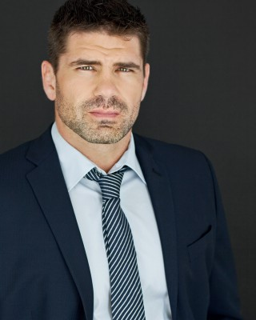
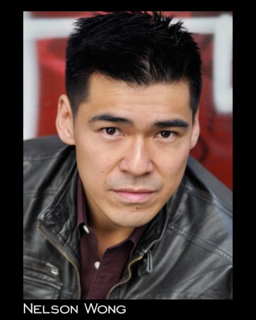
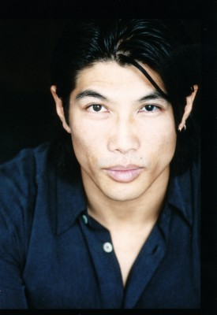

#9897 Skyscraper


 IMDB-Wertung: 5.9 / 10
IMDB-Wertung: 5.9 / 10  Tomatometer: 47
Tomatometer: 47  Metascore: 51
Metascore: 51 
Eine neue berufliche Herausforderung in Hongkong wird zum Albtraum für den Kriegsveteranen und ehemaligen FBI-Einsatzchef Will Sawyer, der im The Pearl, dem mit 240 Stockwerken höchsten Wolkenkratzer der Welt, für Sicherheit sorgen soll. Kaum hat Will sein Amt angetreten, kommt es zur Katastrophe: Die 96. Etage steht plötzlich in Flammen. In den Stockwerken darüber ist seine Familie eingeschlossen, ohne eine realistische Chance auf Rettung. Zu seinem Entsetzen wird er auch noch beschuldigt, die Feuersbrunst selbst entfacht zu haben! Verzweifelt versucht Sawyer, die Brandstifter zu finden, seine Familie aus dem flammenden Inferno zu retten und seine Unschuld zu beweisen.
Jahr: 2018
Dauer: 102 Minuten
FSK: 12
Land: USA Studio: Universal PicturesTonspuren: DTS - ,
Untertitel: Deutsch, Englisch,
Auflösung: 1080p (1920x800) Größe: 8499 MB
Genre: Action, Thriller
Regisseur:  Rawson Marshall Thurber
Rawson Marshall Thurber
Drehbuch: Rawson Marshall Thurber
Soundtrack: Steve Jablonsky
Darsteller:
 Dwayne Johnson als Will Sawyer
Dwayne Johnson als Will Sawyer Neve Campbell als Sarah Sawyer
Neve Campbell als Sarah Sawyer Chin Han als Zhao Long Ji
Chin Han als Zhao Long Ji Roland Møller als Kores Botha
Roland Møller als Kores Botha Noah Taylor als Mr. Pierce
Noah Taylor als Mr. Pierce Byron Mann als Inspector Wu
Byron Mann als Inspector Wu Pablo Schreiber als Ben
Pablo Schreiber als Ben- McKenna Roberts als Georgia Sawyer
- Noah Cottrell als Henry Sawyer
- Hannah Quinlivan als Xia
 Adrian Holmes als Ajani Okeke
Adrian Holmes als Ajani Okeke- Elfina Luk als Sergeant Han
 Kevin Rankin als Ray
Kevin Rankin als Ray- Gretal Montgomery als Ray's Wife
- Jett Klyne als Ray's Son
- Kayden Magnuson als Ray's Daughter
 Byron Lawson als Suit #1
Byron Lawson als Suit #1-  Jason William Day als Botha's Thug #1
- Ryan Handley als Botha's Thug #2
- Sean Kohnke als Botha's Thug #3
 Shawn Stewart als Botha's Thug #4
Shawn Stewart als Botha's Thug #4- Brian Ho als Shady Man
-  Nelson Wong als News Camera Man
- Mike Li als Operations Technician
 Colin Corrigan als Windbreaker Man
Colin Corrigan als Windbreaker Man Omari Newton als Hostage Rescue Commander
Omari Newton als Hostage Rescue Commander Venus Terzo als Hostage Negotiator
Venus Terzo als Hostage Negotiator Paul McGillion als On-Scene Commander
Paul McGillion als On-Scene Commander Matt O'Leary als Skinny Hacker
Matt O'Leary als Skinny Hacker Tzi Ma als Fire Chief Sheng
Tzi Ma als Fire Chief Sheng- Carlo Yu als HKP Officer #1
- Dimitry Tsoy als HKP Officer #2
- Allen Keng als HKP Officer #3
- Sam Yunussov als Penthouse Guard #1
-  Paul Wu als Penthouse Guard #2
 Aaron Au als Police Sniper
Aaron Au als Police Sniper- Grace Wang als News Reporter #1
- Rene Wang als Hong Kong Newscaster
- Kathy Wu als Chinese Newscaster #1
- Lawrence Chau als Chinese Newscaster #2
- Evan Lai als Chinese Newscaster #3
- Shamel Hashish als Arabic Speaking Newscaster
- Fabio Tassone als French Newscaster
 LaSaundra Gibson als American Newscaster #3
LaSaundra Gibson als American Newscaster #3- Malin Barr als Swedish Newscaster (uncredited)
- Vivian Full als Ben's Neighbour (uncredited)
 Endre Hules als Russian Newscaster (uncredited)
Endre Hules als Russian Newscaster (uncredited)- Hung Huynh als Asian Hipster (uncredited)
 Beatrice King als Asian Lady (uncredited)
Beatrice King als Asian Lady (uncredited)- Anthony A. Kung als Cantonese Man (uncredited)
Datei: X:\2018(N-Z)\Skyscraper (2018, FSK12, 1920x800).mkv seit 08.11.2018
Festplatte: HD 2018(G-Z)-2019(A-Z)
 Es gibt insgesamt 172 Filme in der Gruppe '2018(N-Z)'
Es gibt insgesamt 172 Filme in der Gruppe '2018(N-Z)'